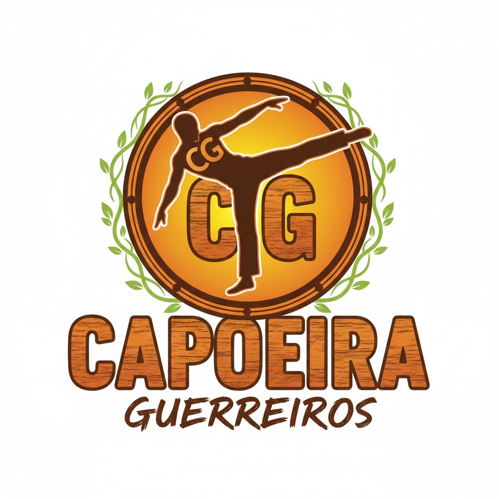
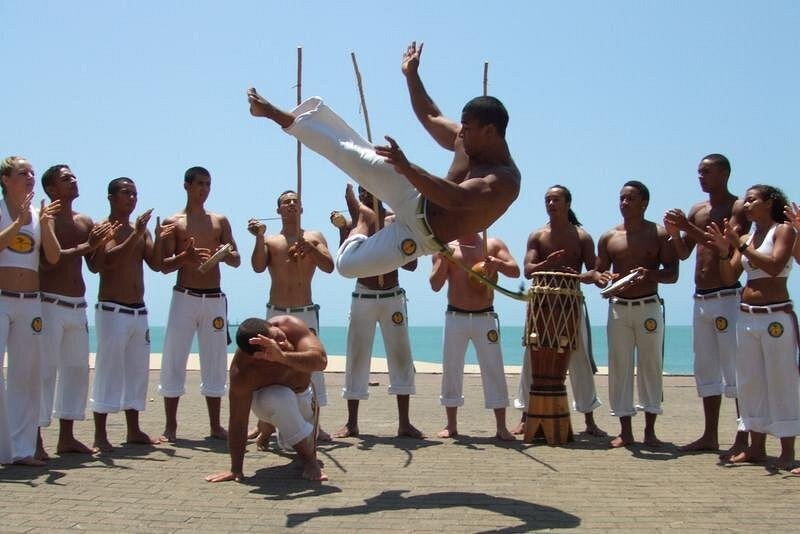
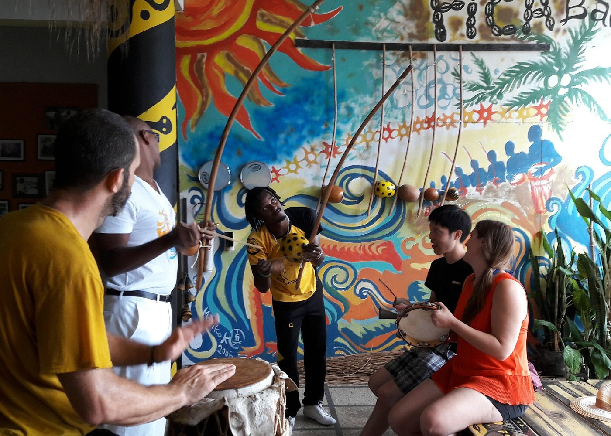
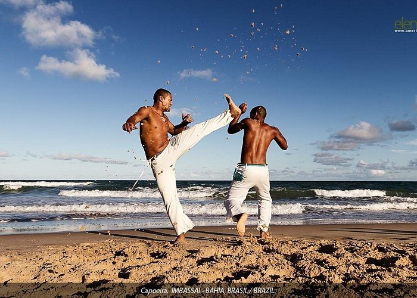
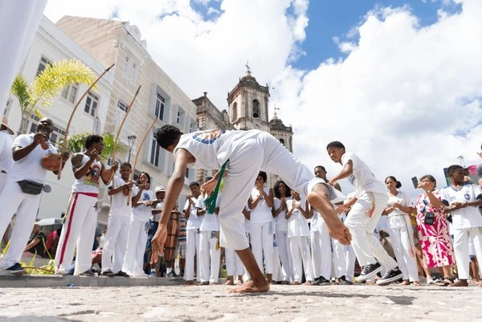
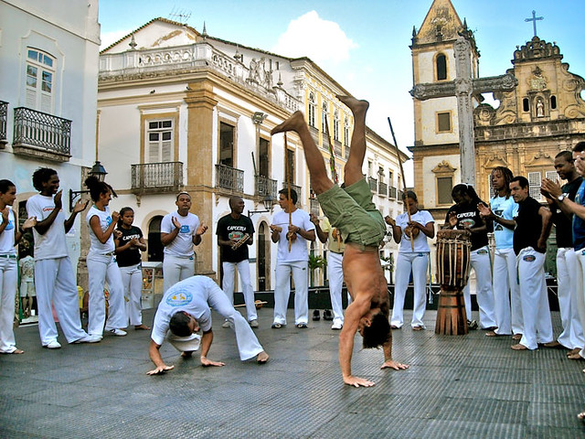
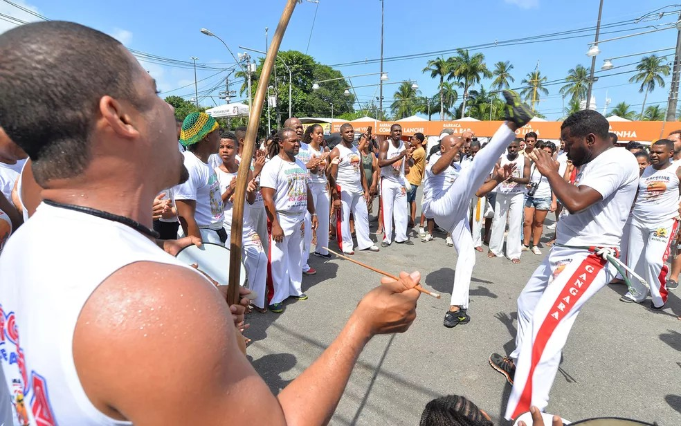

O grupo é a representação de um movimento da negritude de resistência e ressignificação da Capoeira, legado ancestral e instrumento de ressocialização, acolhimento e instrumentalização.






Telefone: (71) 98344-2069
Endereço:
Vila Dois de Julho - Rua Heide Carneiro
Associação de Moradores Vila Dois de Julho
Salvador - Bahia
O grupo é a representação de um movimento da negritude de resistência e ressignificação da Capoeira, legado ancestral e instrumento de ressocialização, acolhimento e instrumentalização em bairros periféricos de Salvador. Tem o desejo e compromisso com nossos antepassados. O grupo forma pessoas na capoeira, desenvolvendo e ministrando aulas, oficinas, ciclos de formação, redes de apoio psicossocial, financeiro e afetivo, em inúmeras comunidades presentes nas regiões periféricas da cidade. Foi multiplicando a filosofia africana através da capoeira, do seu valor, beleza e importância, que já alcançamos mais de 300 escolas e 1500 alunos periféricos.